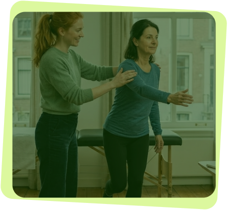
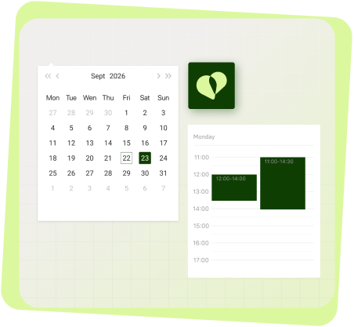

Medispring Physio gère l'administratif à votre place : prescriptions, séances, facturation électronique, eAgreement et agenda. En solo, en pratique de groupe ou en maison médicale.
Laissez vos coordonnées. Un conseiller Medispring vous rappelle ou planifie votre démo.
En envoyant ce formulaire, vous acceptez notre politique de vie privée.
Pas besoin de tout maîtriser d'un coup. Medispring vous explique ce que chaque service change pour vous et l'intègre progressivement dans votre quotidien.
Envoyer l'attestation de soins électroniquement à la mutualité lorsque le patient paie la totalité des honoraires, hors tiers payant.
Facturer électroniquement à la mutualité lorsqu'on applique le tiers payant.
Envoyer les notifications et demandes d'accord aux médecins-conseils des mutualités, et recevoir leurs accords électroniquement.
Consulter les données d'assurabilité du patient : son statut d'assurance et ses droits auprès de la mutualité.
Ils apprécient sa capacité à simplifier leurs tâches tout en répondant aux exigences du terrain.
« Medispring est un outil intuitif et performant, parfaitement adapté aux réalités d’un poste de garde. Il facilite notre organisation quotidienne, améliore la fluidité du travail en équipe et renforce la qualité de prise en charge des patients. L’accompagnement proposé par l’équipe est réactif, professionnel et toujours orienté solutions. »
« Clairement, je trouve que "ça se voit" que Medispring est fait par des médecins, dans le sens où l'utilisation est assez intuitive dans la pratique journalière. »
« J’aime l’idée d’une coopérative. On sent que les médecins sont entendus dans leurs demandes d’améliorations, et que le logiciel continue de s’adapter à nos besoins. »
« Le logiciel est performant au quotidien, à la pointe des outils e-santé, il répond parfaitement à l’exigence et à la rigueur de notre pratique. Ce qui était une contrainte est devenu un confort de travail. »
Suivi des séances, facturation électronique et agenda, connectés à l’écosystème e-Santé belge. En solo, en pratique de groupe ou en maison médicale.

Medispring vous donne une vue claire sur chaque traitement en cours, sans avoir à chercher l'information.
En fin de visite, Medispring s'occupe de tout, du décompte des séances à l'envoi aux mutuelles.

Medispring connecte votre pratique à votre patientèle et à vos confrères, en toute sécurité.
Medispring couvre la période restante de votre contrat actuel. Pas de double facturation ; jusqu'à 9 mois offerts, pour que vous puissiez démarrer quand vous le souhaitez. Migration incluse sans frais supplémentaires !
Premier point : votre certificat eHealth. Il authentifie votre système lors des connexions sécurisées avec MyCareNet. Il est valable 3 ans et peut être renouvelé à partir de 90 jours avant son expiration.
Recevez la checklist et le guide « L'eSanté du kiné, simplement ».
Medispring couvre la période restante de votre contrat actuel. Pas de double facturation, jusqu'à 9 mois offerts.
Oui, sans frais supplémentaires.
eAttest : le patient paie la totalité des honoraires, hors tiers payant. eFact : vous appliquez le tiers payant. Dans les deux cas, l'envoi à la mutualité est électronique.
Envoyer les notifications et demandes d'accord aux médecins-conseils des mutualités, et recevoir leurs accords électroniquement.
Consulter les données d'assurabilité du patient : son statut d'assurance et ses droits auprès de la mutualité.
Il est valable 3 ans et peut être renouvelé à partir de 90 jours avant son expiration. Anticipez : la procédure d'obtention peut prendre du temps.
Oui. En solo, en pratique de groupe ou en maison médicale, Medispring Physio s'adapte à votre pratique.
Le prix dépend de votre situation. Calculez-le en quelques clics avec le bouton « Calculer mon devis ». Support et migration sont inclus, sans frais supplémentaires.
Dossier patient, prescription, facturation et agenda réunis dans un seul outil, connecté à l'écosystème e-Santé belge.